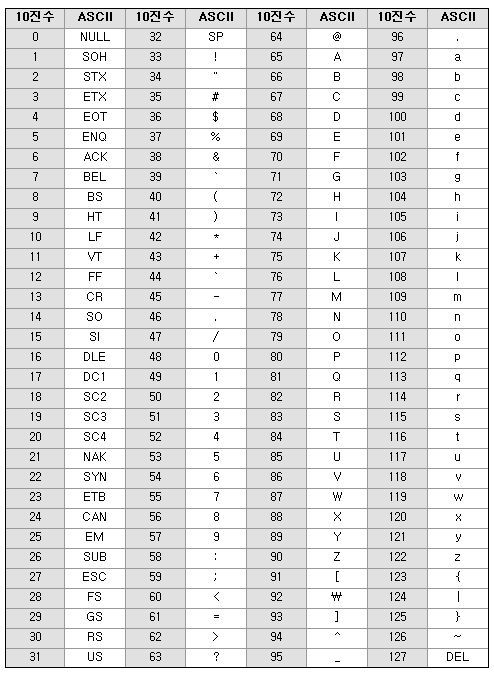

ASCII, 유니코드
컴퓨터는 사람들이 말하는 a, b, c같은 문자를 그대로 이해할 수 없다. 따라서 컴퓨터에게 ~는 a이다 라고 알려줘야 하는데 이때 컴퓨터마다 표현방법이 다르다면 혼란이 있을 수 있다. 따라서 이를 국제적으로 표준화했다.
아스키코드(ASCII)
1963년 미국 국립 표준 협회(ANSI)에서 표준화한 정보교환용 7비트 부호체계
- ASCII: American Standard Code for Information Interchange
- 7비트로 구성되기 때문에 128개까지 표현이 가능하다.
- 000(0x00) ~ 127(0x7f)
- 문자를 나타내는 7비트 + 오류 검사 1비트(페리티 비트) = 총 8비트
- 패리티 비트(Parity Bit)
정보를 전달하는 과정에서 오류가 있었는지 확인하는 비트로 데이터비트 중 1의 개수를 기준으로 짝수/홀수를 나눈다.

- 65부터 대문자 알파벳
- 97부터 소문자 알파벳
유니코드
아스키코드로 알파벳은 표현할 수 있지만 나아가 다른 국가의 언어를 표기하는데는 무리가 있다.(7비트는 27까지만 표현가능 === 128)
따라서 2비트를 사용해서 더 많은 문자를 표현할 수 있는 유니코드가 등장하게 되었다.(216까지 표현가능 === 65526)
유니코드는 전 세계의 모든 문자를 컴퓨터에서 일관되게 표현하고 다룰 수 있도록 설계된 산업 표준이며, 유니코드 협회(Unicode Consortium)가 제정한다.